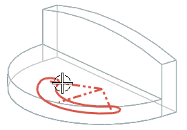
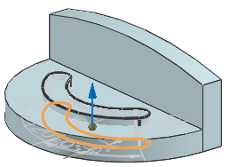
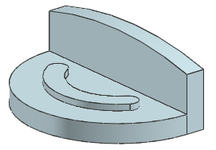

Extrude the slot
-
On the Feature toolbar click Extrude
 .
.
-
On the Selection bar, from the Curve Rule list, make sure Infer Curves is selected.
-
Select the slot sketch.
You can change the rendering style, rotate the part, or use the Part Navigator to help select the sketch.

-
Make sure the vector points up in the +Y direction.

-
In the End Distance box, type 20.
-
In the Boolean list, make sure Unite is selected.
-
Click OK.
-
In the Part Navigator, right-click the Extrude slot feature and choose Make Sketch Internal.
